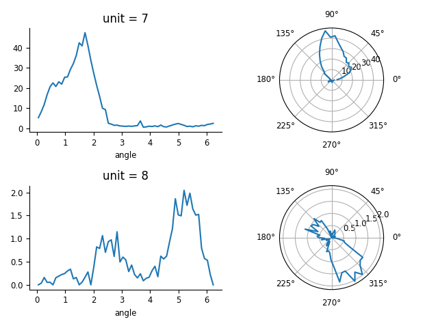
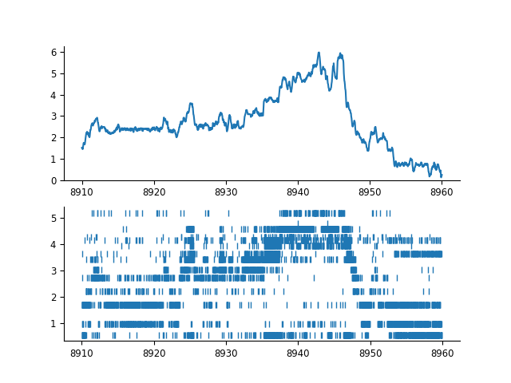
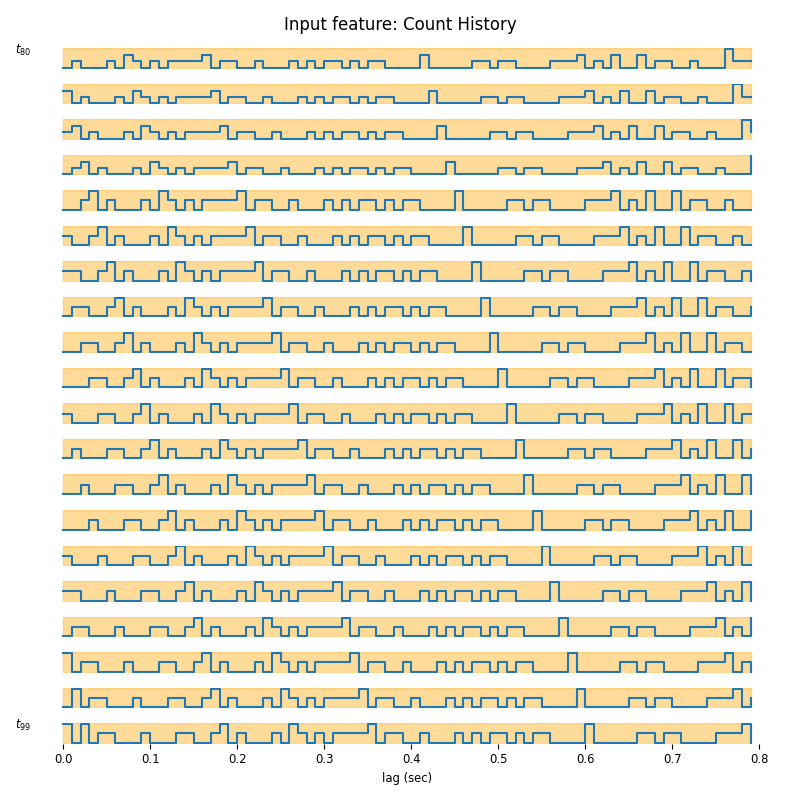
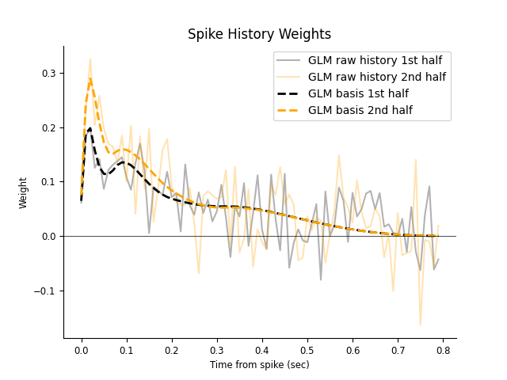
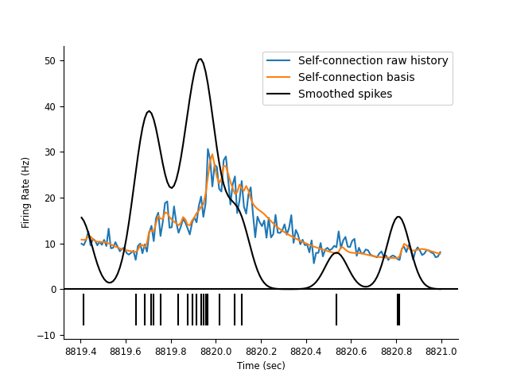
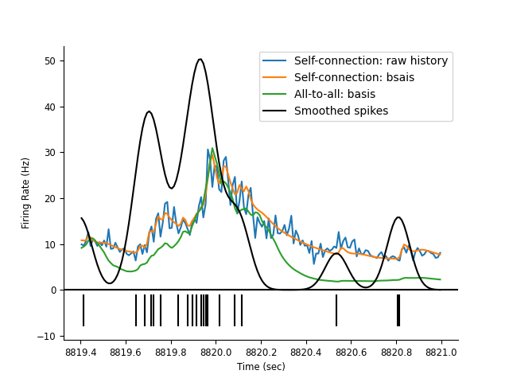
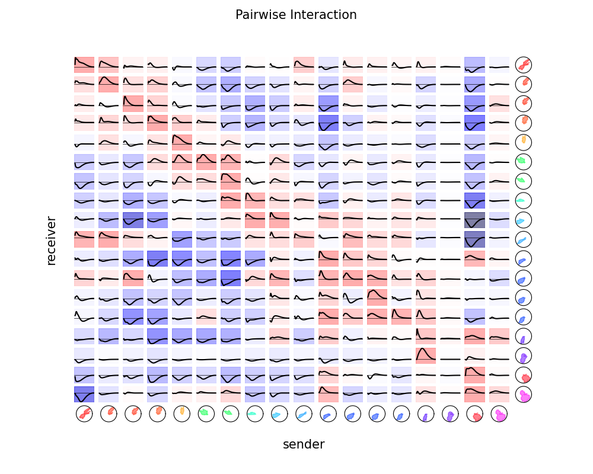

Download
This notebook can be downloaded as 01_head_direction-users.ipynb. See the button at the top right to download as markdown or pdf.
Analyzing head-direction cells with Pynapple and Nemos#
This notebook has had all its explanatory text removed and has not been run. It is intended to be downloaded and run locally (or on the provided binder), working through the questions with your small group.
In this tutorial, we will learn how to use pynapple and nemos to analyze head-direction cells recorded in the anterodorsal thalamic nucleus (ADn) of the mouse. We will use a NWB file containing spike times of neurons and the head-direction of the animal over time. We will study the relationship between neurons during wakefulness and sleep with cross-correlograms. Finally, we will fit a generalized linear model (GLM) to quantify the functional connectivity between neurons based on their spike history.
The pynapple documentation can be found here.
The nemos documentation can be found here.
Objectives#
For part 1 of the tutorial, we will use pynapple to do the following tasks:
Loading a NWB file
Compute tuning curves
Compute cross-correlograms
For part 2 of the tutorial, we will use nemos to do the following tasks:
Create spike history features
Fit a GLM model to a single neuron
Fit a GLM model with basis functions to reduce over-fitting
Fit a GLM model to all neurons to learn functional connectivity
Let’s start by importing all the packages.
import pynapple as nap
import matplotlib.pyplot as plt
import workshop_utils
import numpy as np
import nemos as nmo
# some helper plotting functions
from nemos import _documentation_utils as doc_plots
import workshop_utils
# configure pynapple to ignore conversion warning
nap.nap_config.suppress_conversion_warnings = True
# configure plots some
plt.style.use(nmo.styles.plot_style)
Part 1 : Analyzing head-direction cells with Pynapple#
Fetch and load data#
The dataset we will use is from this study : Peyrache et al., 2015.
If you ran the workshop setup script, you should have this file downloaded already.
If not, the function we’ll use to fetch it will download it for you.
This function is called fetch_data, and can be imported from the workshop_utils module.
This function will give us the file path to where the data is stored.
path = workshop_utils.fetch_data("Mouse32-140822.nwb")
print(path)
Pynapple provides the convenience function nap.load_file for loading a NWB file.
Question: Can you open the NWB file giving the variable path to the function load_file and call the output data?
data =
print(data)
The content of the NWB file is not loaded yet. The object data behaves like a dictionary.
It contains multiple entries corresponding to different data types stored in the NWB file.
In NWB files, spike times are stored in the units entry.
Question: Can you load the spike times from the NWB and call the variables spikes?
spikes = # Get spike timings
print(spikes)
There are a lot of neurons. The neurons that interest us are the neurons labeled adn.
Question: Using the slicing method of your choice, can you select only the neurons in adn that are above 2 Hz firing rate?
THere multiple options here. As a reminder, metadatas can be accessed like a dictionary or as attributes. There are also functions that can help you filter neurons based on metadata.
spikes.labelreturns a pandas Series with the metadata of the neurons.spikes['label']returns a pandas Series with the metadata of the neurons.Functions like
spikes.getby_categoryorspikes.getby_thresholdcan help you filter neurons based on metadata.
spikes = # Select only ADN neurons with rate > 2.0 Hz
print(len(spikes))
The NWB file contains other information about the recording. ry contains the value of the head-direction of the animal over time.
Question: Can you extract the angle of the animal in a variable called angle and print it?
angle = # Get head-direction data from NWB object
print(angle)
But are the data actually loaded or not?
If you look at the type of angle, you will see that it is a Tsd object.
But what about the underlying data array?
The underlying data array is stored in the property d of the Tsd object.
If you print it, you will see that it is a h5py array.
By default, data are lazy-loaded. This can be useful when reading larger than memory array from disk with memory map.
# enter code here
The animal was recorded during wakefulness and sleep.
Question: Can you extract the behavioral intervals in a variable called epochs?
epochs = # Get behavioral epochs from NWB object
print(epochs)
NWB file can save intervals with multiple labels. The object IntervalSet includes the labels as a metadata object.
Question: Using the column tags, can you create one IntervalSet object for intervals labeled wake and one IntervalSet object for intervals labeled sleep?
wake_ep = # Get wake intervals from epochs
sleep_ep = # Get sleep intervals from epochs
Compute tuning curves#
Now we have
spikes
a behavioral feature (i.e. head-direction),
epochs corresponding to when the feature is defined (i.e. when the head-direction was recorded).
We can compute tuning curves, i.e. the firing rate of neurons as a function of head-direction. We want to know how the firing rate of each neuron changes as a function of the head-direction of the animal during wakefulness.
To do this in pynapple, all you need is the call of a single function : nap.compute_tuning_curves!
Question: can you compute the firing rate of ADn units as a function of heading direction, i.e. a head-direction tuning curve and call the variable tuning_curves?
tuning_curves = nap.compute_tuning_curves(
data=, # The neural activity as a TsGroup
features=, # Which feature? Here the head-direction of the animal
bins=, # How many bins of feature space? Here 61 angular bins is a good numbers
epochs = angle.time_support, # The epochs should correspond to when the features are defined. Here we use the time support directly
range= (0, 2*np.pi), # The min and max of the bin array
feature_names = ["angle"] # Let's give a name to our feature for better labelling of the output.
)
tuning_curves
The output is a xarray object indexed by neuron and head-direction: the first dimension corresponds to neurons, the second to angular bins, and additional metadata fields are included.
fig = plt.figure()
plt.subplot(221)
tuning_curves[0].plot()
# plt.plot(tuning_curves[0])
plt.subplot(222,projection='polar')
plt.plot(tuning_curves.angle, tuning_curves[0].values)
plt.subplot(223)
tuning_curves[1].plot()
plt.subplot(224,projection='polar')
plt.plot(tuning_curves.angle, tuning_curves[1].values)
plt.tight_layout()
Figure check

Most of those neurons are head-directions neurons.
The next cell allows us to get a quick estimate of the neurons’s preferred direction. Since this is a lot of xarray wrangling, it is given.
pref_ang = tuning_curves.idxmax(dim="angle")
print(pref_ang)
The variable pref_ang contains the preferred direction of each neuron.
Now this information can be useful to add it to the metainformation of the spikes object since it is neuron-specific information.
Question: Can you add it to the metainformation of spikes? The metadata field should be called pref_ang.
Hint :
There are multiple ways of doing this:
tsgroup['label'] = metadata
tsgroup.label = metadata
tsgroup.set_info(label=metadata)
# enter code here
This index maps a neuron to a preferred angular direction between 0 and 2pi. Let’s visualize the spiking activity of the neurons based on their preferred direction as well as the head-direction of the animal. To make it easier to see, we will restrict the data to a small epoch.
ex_ep = nap.IntervalSet(start=8910, end=8960)
fig = plt.figure()
plt.subplot(211)
plt.plot(angle.restrict(ex_ep))
plt.ylim(0, 2*np.pi)
plt.subplot(212)
plt.plot(spikes.restrict(ex_ep).to_tsd("pref_ang"), '|')
Figure check

Compute correlograms#
We see that some neurons have a correlated activity meaning they tend to fire together, while others have an anti-correlated activity meaning when one neuron fires, the other does not.
Can we quantify this correlation between pairs of neurons? To do this, we can compute cross-correlograms between pairs of neurons.
A cross-correlogram measures the correlation between the spike trains of two neurons as a function of time lag. It counts how often spikes from one neuron occur at different time lags relative to spikes from another neuron.
In pynapple, we use the function nap.compute_crosscorrelogram to compute cross-correlograms between pairs of neurons.
Question: Can you compute cross-correlograms during wake for all pairs of neurons and call it cc_wake?
cc_wake = nap.compute_crosscorrelogram(
data=, # The neural activity as a TsGroup
binsize=, # I suggest 200 ms bin
windowsize=, # Let's do a 20 s window
ep= # Which epoch to restrict the cross-correlograms. Here is it should be wakefulness.
)
The output is a pandas DataFrame where each column is a pair of neurons. All pairs of neurons are computed automatically. The index shows the time lag. Let’s visualize some cross-correlograms. To make things easier, we will focus on two pairs of neurons: one pair that fires for the same direction and one pair that fires for opposite directions.
The pair (7, 20) fires for the same direction while the pair (7, 26) fires for opposite directions.
To index pandas columns, you can do cc[(7, 20)].
To index xarray tuning curves, you can do tuning_curves.sel(unit=[7,20])
index = spikes.keys()
fig = plt.figure()
plt.subplot(221)
tuning_curves.sel(unit=[7,20]).plot(x='angle', hue='unit')
plt.title("Tuning curves")
plt.subplot(222)
plt.plot(cc_wake[(7, 20)])
plt.xlabel("Time lag (s)")
plt.title("Cross-corr.")
plt.subplot(223)
tuning_curves.sel(unit=[7,26]).plot(x='angle', hue='unit')
plt.title("Tuning curves")
plt.subplot(224)
plt.plot(cc_wake[(7, 26)])
plt.xlabel("Time lag (s)")
plt.title("Cross-corr.")
plt.tight_layout()
Figure check

As you can see, the pair of neurons that fire for the same direction have a positive correlation at time lag 0, meaning they tend to fire together. The pair of neurons that fire for opposite directions have a negative correlation at time lag 0, meaning when one neuron fires, the other does not.
Pairwise correlation were computed during wakefulness. The activity of the neurons was also recorded during sleep.
Question: can you compute the cross-correlograms during sleep?
cc_sleep = nap.compute_crosscorrelogram(
data=, # The neural activity as a TsGroup
binsize=, # I suggest 20 ms bin
windowsize=, # Let's do a 1 s window
ep= # Which epoch to restrict the cross-correlograms. Here is it should be sleep.
)
Let’s visualize the cross-correlograms during wake and sleep for the pair of neurons that fire for the same direction and the pair of neurons that fire for opposite directions.
fig = plt.figure()
plt.subplot(231)
tuning_curves.sel(unit=[7,20]).plot(x='angle', hue='unit')
plt.title("Tuning curves")
plt.subplot(232)
plt.plot(cc_wake[(7, 20)])
plt.xlabel("Time lag (s)")
plt.title("Wake")
plt.subplot(233)
plt.plot(cc_sleep[(7, 20)])
plt.xlabel("Time lag (s)")
plt.title("Sleep")
plt.subplot(234)
tuning_curves.sel(unit=[7,26]).plot(x='angle', hue='unit')
plt.subplot(235)
plt.plot(cc_wake[(7, 26)])
plt.xlabel("Time lag (s)")
plt.subplot(236)
plt.plot(cc_sleep[(7, 26)])
plt.xlabel("Time lag (s)")
plt.tight_layout()
Figure check

What does it mean for the relationship between cells here? Remember that during sleep, the animal is not moving and therefore the head-direction is not defined.
Part 2 : Fitting a GLM model with Nemos#
In the first part of the notebook, we characterized the relationship between head-direction cells during wake and sleep. Cells that fire together during wake also fire together during sleep and cells that don’t fire together during wake don’t fire together during sleep. The goal here is to characterized this relationship with generalized linear model. Since cells have a functional relationship to each other, the activity of one cell should predict the activity of another cell.
Question : are neurons constantly tuned to head-direction and can we use it to predict the spiking activity of each neuron based only on the activity of other neurons?
To fit the GLM faster, we will use only the first 3 min of wake.
# restrict wake epoch to first 3 minutes
wake_ep = nap.IntervalSet(
start=wake_ep.start[0], end=wake_ep.start[0] + 3 * 60
)
To use the GLM, we need first to bin the spike trains. Here we use pynapple and the function count.
Question: can you bin the spike trains in 10 ms bins during the wake_ep and call the variable count?
bin_size = 0.01
count = # Bin spike trains during wake_ep
print(count.shape)
Above we defined pref_ang as the preferred direction of each neuron. np.argsort(pref_ang.values) gives you the order to sort the columns of count.
This is useful to visualize the activity of neurons based on their preferred direction.
count = count[:, np.argsort(pref_ang.values)]
It’s time to use NeMoS. Our end goal is to estimate the pairwise interaction between neurons. This can be quantified with a GLM if we use the recent population spike history to predict the current time step.
To simplify our life, let’s see first how we can model spike history effects in a single neuron. The simplest approach is to use counts in fixed length window \(i\), \(y_{t-i}, \dots, y_{t-1}\) to predict the next count \(y_{t}\).
Before starting the analysis, let’s
select a neuron (first column is good) from the
countobject (call the variableneuron_count)Select the first 1.2 seconds of wake_ep for visualization. (call the epoch
epoch_one_spk).
# select a neuron's spike count time series
neuron_count = count[:, 0]
# restrict to a smaller time interval
epoch_one_spk = nap.IntervalSet(
start=count.time_support.start[0], end=count.time_support.start[0] + 1.2
)
Features Construction#
Let’s fix the spike history window size that we will use as predictor meaning how far back in time we want to look to predict the current rate.
Let’s :
Fix a history window of 800ms (0.8 seconds).
Plot the result using
doc_plots.plot_history_window
# set the size of the spike history window in seconds
window_size_sec = 0.8
fig = doc_plots.plot_history_window(neuron_count, epoch_one_spk, window_size_sec);
Figure check

For each time point, we shift our window one bin at the time and vertically stack the spike count history in a matrix. Each row of the matrix will be used as the predictors for the rate in the next bin (red narrow rectangle in the figure).
doc_plots.run_animation(neuron_count, epoch_one_spk.start[0])
If \(t\) is smaller than the window size, we won’t have a full window of spike history for estimating the rate. One may think of padding the window (with zeros for example) but this may generate weird border artifacts. To avoid that, we can simply restrict our analysis to times \(t\) larger than the window and NaN-pad earlier time-points;
You can construct this feature matrix with the HistoryConv basis.
Question: Can you:
- Convert the window size in number of bins (call it window_size)
- Define an HistoryConv basis covering this window size (call it history_basis).
- Create the feature matrix with history_basis.compute_features (call it input_feature).
# convert the prediction window to bins (by multiplying with the sampling rate)
window_size = int(window_size_sec * neuron_count.rate)
# define the history bases
history_basis = # Parameter indicate the window size in bins
# create the feature matrix
input_feature = # Using history_basis compute features on neuron_count
NeMoS NaN pads if there aren’t enough samples to predict the counts.
# print the NaN indices along the time axis
print("NaN indices:\n", np.where(np.isnan(input_feature[:, 0]))[0])
The binned counts originally have shape “number of samples”, we should check that the dimension are matching our expectation
print(f"Time bins in counts: {neuron_count.shape[0]}")
print(f"Convolution window size in bins: {window_size}")
print(f"Feature shape: {input_feature.shape}")
print(f"Feature shape: {input_feature.shape}")
We can visualize the output for a few time bins
suptitle = "Input feature: Count History"
neuron_id = 0
fig = workshop_utils.plot_features(input_feature, count.rate, suptitle)
Figure check

As you may see, the time axis is backward, this happens because under the hood, the basis is using the convolution operator which flips the time axis. This is equivalent, as we can interpret the result as how much a spike will affect the future rate. In the previous tutorial our feature was 1-dimensional (just the current), now instead the feature dimension is 80, because our bin size was 0.01 sec and the window size is 0.8 sec. We can learn these weights by maximum likelihood by fitting a GLM.
Fitting a single neuron model#
When working a real dataset, it is good practice to train your models on a chunk of the data and use the other chunk to assess the model performance. This process is known as “cross-validation”. There is no unique strategy on how to cross-validate your model; What works best depends on the characteristic of your data (time series or independent samples, presence or absence of trials), and that of your model. Here, for simplicity use the first half of the wake epochs for training and the second half for testing. This is a reasonable choice if the statistics of the neural activity does not change during the course of the recording. We will learn about better cross-validation strategies with other examples.
# construct the train and test epochs
duration = input_feature.time_support.tot_length("s")
start = input_feature.time_support["start"]
end = input_feature.time_support["end"]
# define the interval sets
first_half = nap.IntervalSet(start, start + duration / 2)
second_half = nap.IntervalSet(start + duration / 2, end)
Question: Can you fit the glm to the first half of the recording and visualize the maximum likelihood weights?
The model used should be a nmo.glm.GLM with the solver LBFGS.
# define the GLM object
model = nmo.glm.GLM() # Parameter is the solver name
# Fit over the training epochs
model.fit(
input_feature.restrict(), # Parameter is the feature matrix restricted to the first half
neuron_count.restrict() # Parameter is the binned spike count time series restricted to the first half
)
The weights represent the effect of a spike at time lag \(i\) on the rate at time \(t\). The next cell display the learned weights.
The model should be called model from the previous cell.
fig = plt.figure()
plt.title("Spike History Weights")
plt.plot(np.arange(window_size) / count.rate, np.squeeze(model.coef_), lw=2, label="GLM raw history 1st Half")
plt.axhline(0, color="k", lw=0.5)
plt.xlabel("Time From Spike (sec)")
plt.ylabel("Kernel")
plt.legend()
Figure check

The response in the previous figure seems noise added to a decay, therefore the response can be described with fewer degrees of freedom. In other words, it looks like we are using way too many weights to describe a simple response. If we are correct, what would happen if we re-fit the weights on the other half of the data?
Question: Can you fit a new model on the second half of the data and call it model_second_half?
# fit on the other half of the data
model_second_half = # Parameter is the solver name
model_second_half.fit(
, # Parameter is the feature matrix restricted to the second half
# Parameter is the binned spike count time series restricted to the second half
)
Let’s plot the weights learned on the second half of the data and compare them to those learned on the first half.
fig = plt.figure()
plt.title("Spike History Weights")
plt.plot(np.arange(window_size) / count.rate, np.squeeze(model.coef_),
label="GLM raw history 1st Half", lw=2)
plt.plot(np.arange(window_size) / count.rate, np.squeeze(model_second_half.coef_),
color="orange", label="GLM raw history 2nd Half", lw=2)
plt.axhline(0, color="k", lw=0.5)
plt.xlabel("Time From Spike (sec)")
plt.ylabel("Kernel")
plt.legend()
Figure check

What can we conclude?
The fast fluctuations are inconsistent across fits, indicating that they are probably capturing noise, a phenomenon known as over-fitting; On the other hand, the decaying trend is fairly consistent, even if our estimate is noisy. You can imagine how things could get worst if we needed a finer temporal resolution, such 1ms time bins (which would require 800 coefficients instead of 80). What can we do to mitigate over-fitting now?
Reducing feature dimensionality#
Let’s see how to use NeMoS’ basis module to reduce dimensionality and avoid over-fitting!
For history-type inputs, we’ll use again the raised cosine log-stretched basis,
Pillow et al., 2005.
fig = doc_plots.plot_basis()
Figure check

We can initialize the RaisedCosineLogConv by providing the number of basis functions
and the window size for the convolution. With more basis functions, we’ll be able to represent
the effect of the corresponding input with the higher precision, at the cost of adding additional parameters.
Question: Can you define the basis RaisedCosineLogConvand name it basis?
Basis parameters:
8 basis functions.
Window size of 0.8sec.
# a basis object can be instantiated in "conv" mode for convolving the input.
basis = nmo.basis.RaisedCosineLogConv(
n_basis_funcs=, # Number of basis functions
window_size= # Window size in bins
)
Our spike history predictor was huge: every possible 80 time point chunk of the data, for \(144 \cdot 10^4\) total numbers. By using this basis set we can instead reduce the predictor to 8 numbers for every 80 time point window for \(144 \cdot 10^3\) total numbers, an order of magnitude less. With 1ms bins we would have achieved 2 order of magnitude reduction in input size. This is a huge benefit in terms of memory allocation and, computing time. As an additional benefit, we will reduce over-fitting.
Let’s see our basis in action. We can “compress” spike history feature by convolving the basis
with the counts (without creating the large spike history feature matrix).
This can be performed in NeMoS by calling the compute_features method of basis.
Question: Can you:
Convolve the counts with the basis functions. (Call the output
conv_spk)Print the shape of
conv_spkand compare it toinput_feature.
# equivalent to
# `nmo.convolve.create_convolutional_predictor(basis_kernels, neuron_count)`
conv_spk = basis.compute_features() # Parameter is the binned spike count time series
print(f"Raw count history as feature: {input_feature.shape}")
print(f"Compressed count history as feature: {conv_spk.shape}")
Let’s focus on two small time windows and visualize the features, which result from convolving the counts with the basis elements.
# Visualize the convolution results
epoch_one_spk = nap.IntervalSet(8917.5, 8918.5)
epoch_multi_spk = nap.IntervalSet(8979.2, 8980.2)
fig = doc_plots.plot_convolved_counts(neuron_count, conv_spk, epoch_one_spk, epoch_multi_spk)
Figure check

Fit a GLM with basis features with reduced dimensionality#
Now that we have our “compressed” history feature matrix, we can fit the parameters for a new GLM model using these features.
Question: Can you fit the model using the compressed features? Call it model_basis.
# use restrict on interval set training
model_basis = nmo.glm.GLM() # Parameter is the solver name
model_basis.fit(
, # Parameter is the convolved feature matrix restricted to the first half
# Parameter is the binned spike count time series restricted to the first half
)
We can plot the resulting response, noting that the weights we just learned needs to be “expanded” back
to the original window_size dimension by multiplying them with the basis kernels.
We have now 8 coefficients,
print(model_basis.coef_)
In order to get the response of a neuron in response to its history, we need to multiply the coefficients by their corresponding basis function, and sum them.
Let’s do that now. We can reconstruct the history filter by multiplying the basis kernels with the learned coefficients.
We can get the basis kernels by calling the evaluate_on_grid method of the basis object.
Then we can multiply the basis kernels with the coefficients using np.matmul.
# get the basis function kernels
_, basis_kernels = basis.evaluate_on_grid(window_size)
# multiply with the weights
self_connection = np.matmul(basis_kernels, model_basis.coef_)
print(self_connection.shape)
Let’s check if our new estimate does a better job in terms of over-fitting. We can do that by visual comparison, as we did previously. Let’s fit the second half of the dataset.
# fit on the other half of the data
model_basis_second_half = nmo.glm.GLM(solver_name="LBFGS").fit(
conv_spk.restrict(second_half), neuron_count.restrict(second_half)
)
self_connection_second_half = np.matmul(basis_kernels, model_basis_second_half.coef_)
Let’s plot the weights learned on the second half of the data and compare them to those learned on the first half.
time = np.arange(window_size) / count.rate
fig = plt.figure()
plt.title("Spike History Weights")
plt.plot(time, np.squeeze(model.coef_), "k", alpha=0.3, label="GLM raw history 1st half")
plt.plot(time, np.squeeze(model_second_half.coef_), alpha=0.3, color="orange", label="GLM raw history 2nd half")
plt.plot(time, self_connection, "--k", lw=2, label="GLM basis 1st half")
plt.plot(time, self_connection_second_half, color="orange", lw=2, ls="--", label="GLM basis 2nd half")
plt.axhline(0, color="k", lw=0.5)
plt.xlabel("Time from spike (sec)")
plt.ylabel("Weight")
plt.legend()
Figure check

Let’s see if the basis model improves prediction of the firing rate. Here we will compare the firing rate predicted
by the two models on the whole dataset. The model should be called model and model_basis from the previous cells.
Question: Can you:
Predict the rates from
modelandmodel_basis? Call itrate_historyandrate_basis.
rate_basis = model_basis.predict() # Parameter is the convolved feature matrix
rate_history = model.predict() # Parameter is the original feature
# convert the rate from spike/bin to spike/sec by multiplying with neuron_count.rate
rate_basis = rate_basis * conv_spk.rate
rate_history = rate_history * conv_spk.rate
Let’s plot the predicted rates over a short window not used for training.
ep = nap.IntervalSet(start=8819.4, end=8821)
# plot the rates
fig = doc_plots.plot_rates_and_smoothed_counts(
neuron_count,
{"Self-connection raw history":rate_history, "Self-connection basis": rate_basis}
);
Figure check

All-to-all Connectivity#
The same approach can be applied to the whole population. Now the firing rate of a neuron
is predicted not only by its own count history, but also by the rest of the
simultaneously recorded population. We can convolve the basis with the counts of each neuron
to get an array of predictors of shape, (num_time_points, num_neurons * num_basis_funcs).
Preparing the features#
Question: Can you:
Re-define the basis?
Convolve all counts? Call the output in
convolved_count.Print the output shape?
Since this time we are convolving more than one neuron, we need to reset the expected input shape.
This can be done by passing the population counts to the set_input_shape method.
# reset the input shape by passing the pop. count
print(count.shape)
print(152/8)
basis.set_input_shape(count)
# convolve all the neurons
convolved_count = basis.compute_features() # Parameter is the binned spike count time series
Check the dimension to make sure it make sense.
Shape should be (n_samples, n_basis_func * n_neurons)
print(f"Convolved count shape: {convolved_count.shape}")
Fitting the Model#
This is an all-to-all neurons model.
We are using the class PopulationGLM to fit the whole population at once.
Once we condition on past activity, log-likelihood of the population is the sum of the log-likelihood of individual neurons. Maximizing the sum (i.e. the population log-likelihood) is equivalent to maximizing each individual term separately (i.e. fitting one neuron at the time).
Question: Can you:
Fit a
PopulationGLM? Call the objectmodel. Solver should beLBFGS.Use Ridge regularization with a
regularizer_strength=0.1?Print the shape of the estimated coefficients.
model = nmo.glm.PopulationGLM(
regularizer=, # Regularizer type
solver_name=, # Solver name
regularizer_strength= # Regularization strength
).fit(, ) # Parameters are the convolved feature matrix and the binned spike count time series
print(f"Model coefficients shape: {model.coef_.shape}")
Comparing model predictions.#
Predict the rate (counts are already sorted by tuning prefs)
Question: Can you:
Predict the firing rate of each neuron? Call it
predicted_firing_rate.Convert the rate from spike/bin to spike/sec?
predicted_firing_rate = model.predict() # Parameter is the convolved feature matrix
# convert the rate from spike/bin to spike/sec by multiplying with conv_spk.rate
predicted_firing_rate = predicted_firing_rate * conv_spk.rate
Now we can visualize the tuning curves predicted by the model as well as the real tuning curves and the predicted firing rate.
# use pynapple for time axis for all variables plotted for tick labels in imshow
fig = workshop_utils.plot_head_direction_tuning_model(tuning_curves, spikes, angle,
predicted_firing_rate, threshold_hz=1,
start=8910, end=8960, cmap_label="hsv");
Figure check

Let’s see if our firing rate predictions improved and in what sense.
fig = doc_plots.plot_rates_and_smoothed_counts(
neuron_count,
{"Self-connection: raw history": rate_history,
"Self-connection: bsais": rate_basis,
"All-to-all: basis": predicted_firing_rate[:, 0]}
)
Figure check

Visualizing the connectivity#
Finally, we can extract and visualize the pairwise interactions between neurons.
**Question: Can you extract the weights and store it in a (n_neurons, n_neurons, n_basis_funcs) array?
# original shape of the weights
print(f"GLM coeff: {model.coef_.shape}")
You can use the split_by_feature method of basis for this. It will reshape the coefficient vector into a 3D array.

# split the coefficient vector along the feature axis (axis=0)
weights_dict = basis.split_by_feature() # Parameter is the model coefficients. Axis is 0
# The output is a dict with key the basis label,
# and value the reshaped coefficients
weights = weights_dict["RaisedCosineLogConv"]
print(f"Re-shaped coefficients: {weights.shape}")
The shape is (sender_neuron, num_basis, receiver_neuron).
Let’s reconstruct the coupling filters by multiplying the weights with the basis functions.
Here we use np.einsum for that. It’s a powerful function for summing products of arrays over specified axes.
In this case, the operation is :
(sender_neuron, num_basis, receiver_neuron) x (time lag, num_basis) -> (sender_neuron, receiver_neuron, time lag)
responses = np.einsum("jki,tk->ijt", weights, basis_kernels)
print(responses.shape)
Finally, we can visualize the pairwise interactions by plotting all the coupling filters.
predicted_tuning_curves = nap.compute_tuning_curves(
data=predicted_firing_rate,
features=angle,
bins=61,
epochs = angle.time_support,
range=(0, 2 * np.pi),
feature_names = ["angle"]
)
fig = workshop_utils.plot_coupling_filters(responses, predicted_tuning_curves)
Figure check

Conclusion#
These coupling filters represent the influence of one neuron on another over time. They have been sorted based on the preferred head-direction of each neuron. Note that those neurons are not synaptically connected, but they have a functional relationship based on their tuning to head-direction.